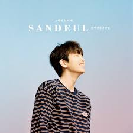

산들

아직 누군진 몰라 그려본 모습은 있지만 내 생각과 다른 모습에 못 알아볼까 걱정은 안 해 아무것도 못해도 하루가 아깝진 않아 어떻게든 시간이 지나야 빨리 만날 것 같아 그댈 알아볼 수 있도록 본적도 없는 당신과 내가 가늠할 수 없는 그 날에 만나 언젠가 만날 우리가 될 때 모르고 지나치지 않게 그댈 알아볼 수 있도록 그렇게 있어 줘 지금 사랑하고 있다면 아름다운 사랑을 해요 질투는 많이 나지만 그래도 행복하면 좋겠어 그대가 겪은 뜨거운 사랑과 그리고 차갑던 사람 날 만나게 된다면 기억도 안 날 거예요 그댈 알아볼 수 있도록 본적도 없는 당신과 내가 가늠할 수 없는 그 날에 만나 언젠가 만날 우리가 될 때 모르고 지나치지 않게 그댈 알아볼 수 있도록 본적도 없는 당신과 함께 가늠할 수 없는 그 날에 만나 언젠가 당신 앞에서 내가 모든 걸 안아 줄 수 있게 그댈 알아볼 수 있도록 내가 널 꼭 찾을게 그렇게 있어 줘 그렇게 있어 줘 그렇게 있어 줘소스: Musixmatch
작사: Park Won